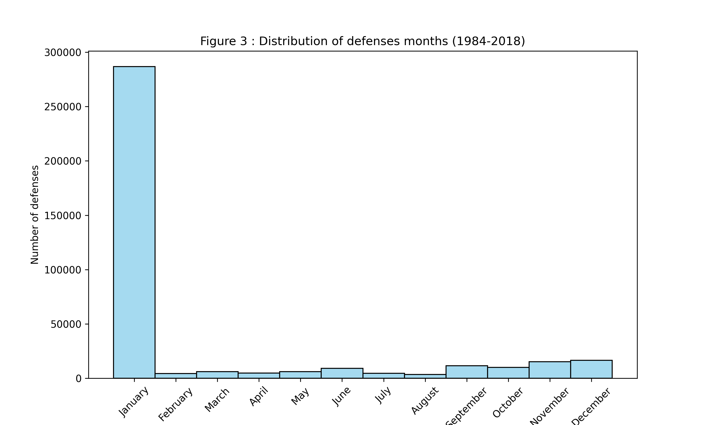
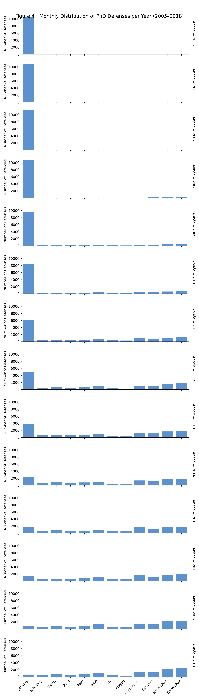
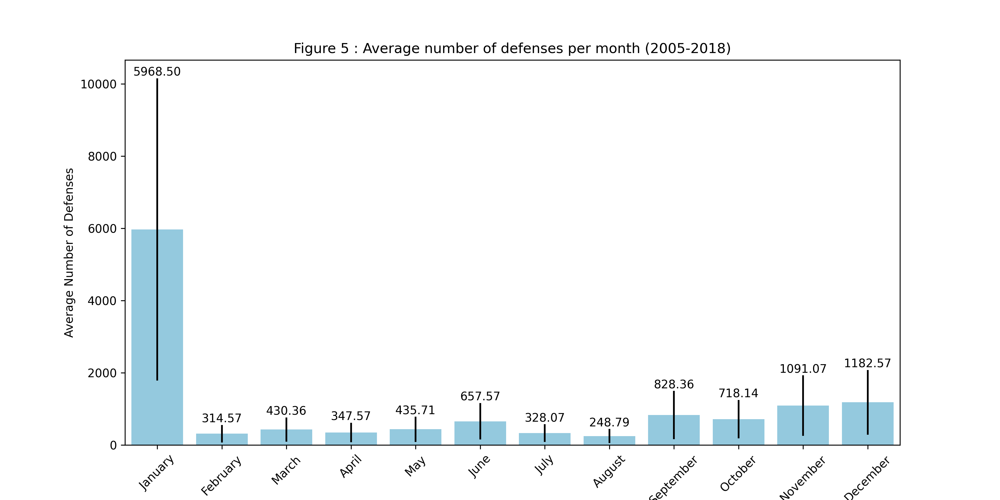
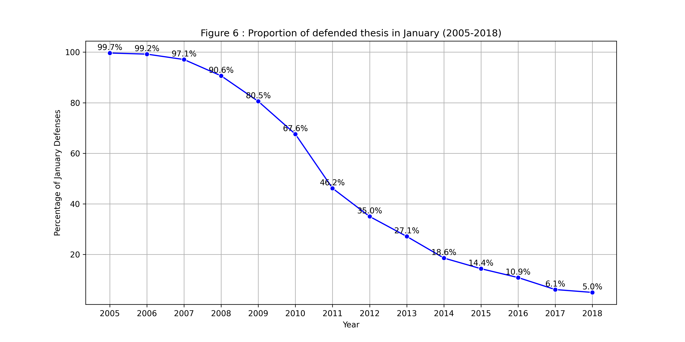
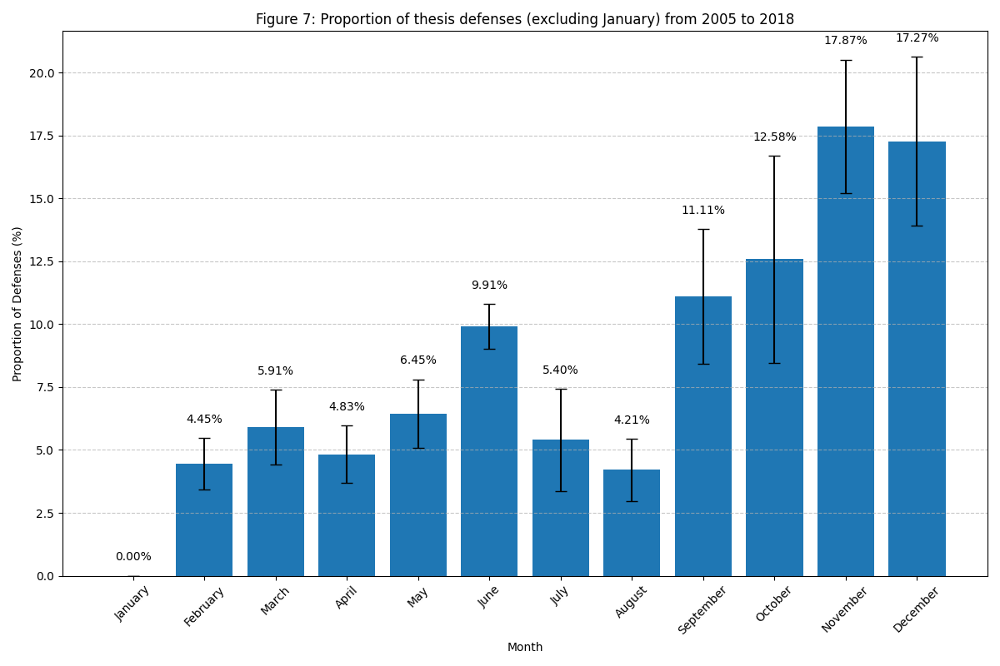
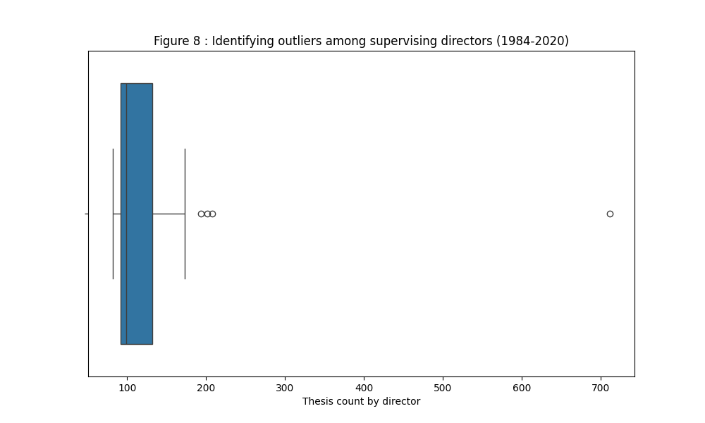
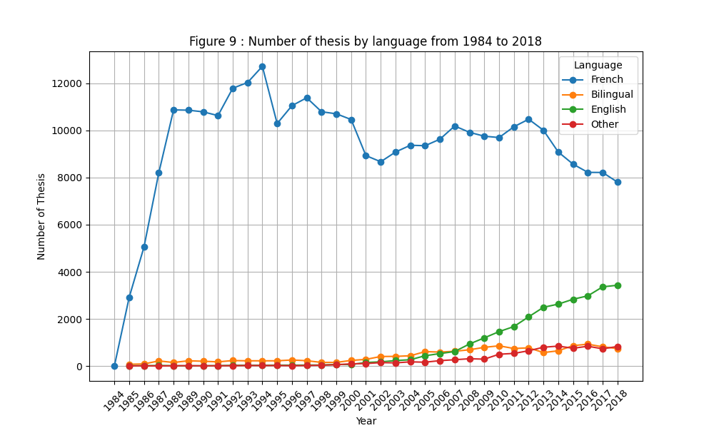
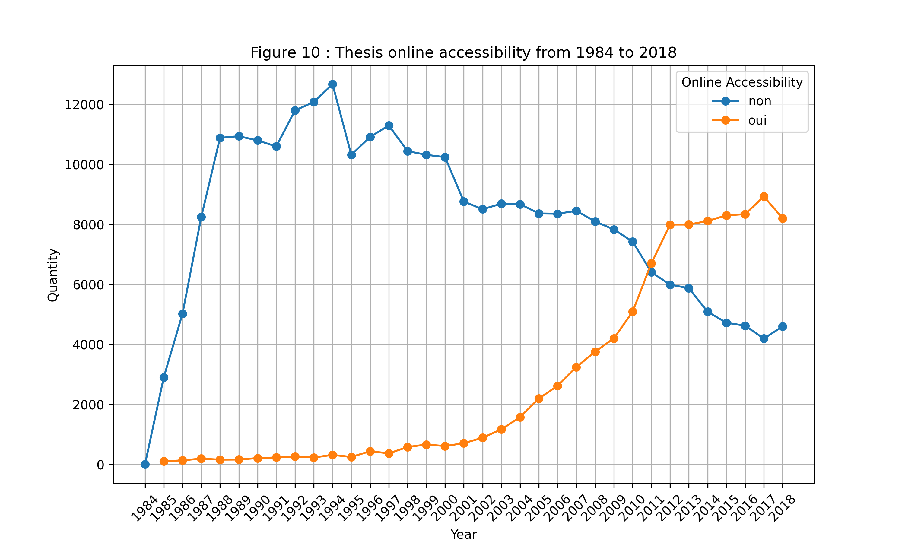

🇫🇷 Visualisations du projet
Cette page regroupe les graphiques générés pour l’analyse du jeu de données Thesis.
🇬🇧 Project Visualisations
This page displays the plots generated for the Thesis dataset analysis.

Figure 3 - Distribution of defenses months (1984-2018)

Figure 4 - Defenses per year

Figure 5 - Average number of defenses per month (2005-2018)

Figure 6 - Proportion of defended thesis in January (2005-2018)

Figure 7 - Proportion of thesis defenses (excluding January) from 2005 to 2018

Figure 8 - Identifying outliers among supervising directors (1984-2020)

Figure 9 - Number of thesis by language from 1984 to 2018

Figure 10 - Thesis online accessibility from 1984 to 2018